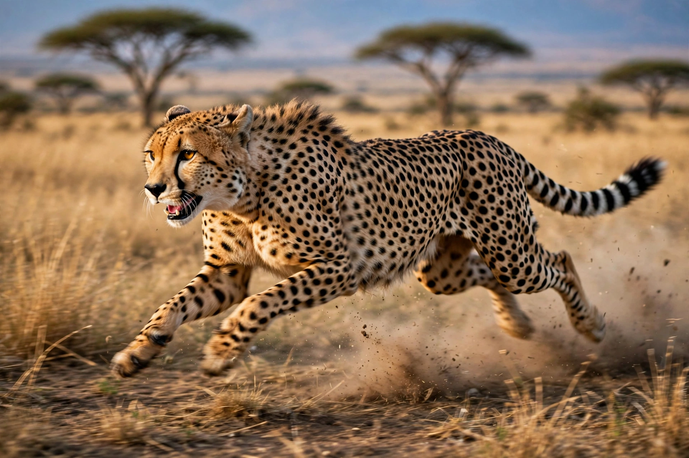

| Scientific name | Acinonyx jubatus |
|---|---|
| Family | Felidae |
| Range | Africa; small population in Iran |
| Top speed | About 60-70 km/h in short bursts (estimates vary) |
| Status | Vulnerable (IUCN); Asiatic subspecies critically endangered |
The cheetah (Acinonyx jubatus) is a large spotted cat native mainly to Africa, famed as the fastest land animal.
Description
Built for speed, it has a slender body, long legs, a flexible spine, semi-retractable claws and distinctive black "tear marks" from eye to mouth. Adults weigh roughly 34-64 kg.
Behaviour and hunting
Unlike other big cats, cheetahs hunt mainly by day, stalking prey such as gazelles and impala before a short explosive chase, tripping prey and suffocating it. Females are solitary with cubs; males may form coalitions.
Conservation
Habitat loss, human-wildlife conflict and low genetic diversity threaten the species; the Asiatic cheetah survives only in Iran, and a reintroduction project began in India in 2022.